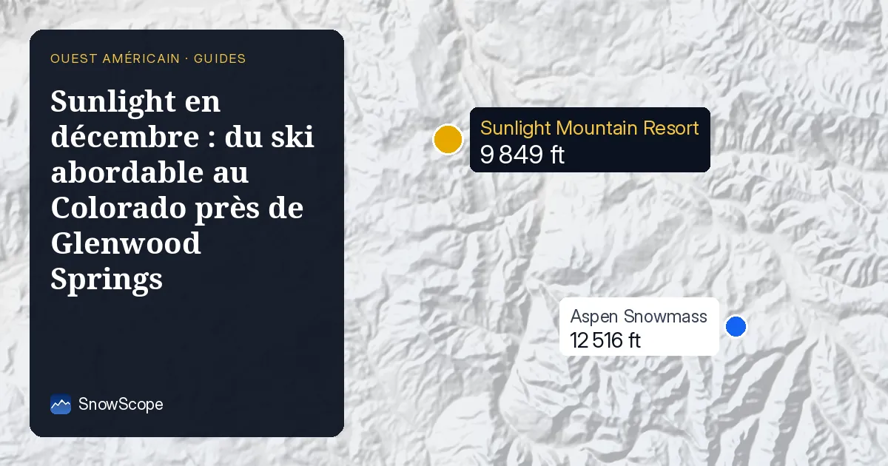

Sunlight en décembre : du ski abordable au Colorado près de Glenwood Springs
Sunlight est la station de ski du Colorado qu'on oublie en faisant la queue sur l'I-70. Elle se trouve au-dessus de Glenwood Springs, ses forfaits démarrent à 74 $, et elle fait partie de l'Indy Pass. La neige de décembre y est correcte selon notre historique, mais pas garantie.
Consultez les prévisions neige en temps réel pour Sunlight Mountain Resort sur l'application SnowScopeHauteurs de neige, alertes poudreuse et carte 3D, gratuitement.
Loin de la foule
Sur notre cartographie, Sunlight est petite : 3 remontées et environ 23 mi (37 km) de pistes, d'environ 8 140 pieds (2 480 m) à 9 850 pieds (3 002 m). Glenwood Springs, avec ses sources chaudes, est la ville en bas, ce qui fait de la journée de ski ici un duo facile avec un bain du soir.

Les prix, et une échéance
Les forfaits journée et multi-jours démarrent à 74 $. La meilleure offre est le Sunny 6 Pack : six forfaits dès 349 $, mais l'offre se termine le 30 novembre 2026, il faut donc l'acheter avant le vrai début de la saison.
Sunlight figure aussi sur la liste de l'Indy Pass. L'Indy Base Pass est à 419 $ et l'Indy+ Pass à 469 $, chacun donnant deux jours dans chaque station membre.

Décembre, semaine après semaine
La neige durable atteint généralement la mi-montagne, vers 8 990 pieds (2 741 m), à la mi-octobre. Un 1er décembre type y a 20 in (51 cm), le 15 décembre 26 in (67 cm), et le jour de Noël 31 in (80 cm).
La part des semaines à bonne neige à mi-montagne (une moyenne hebdomadaire de 20 in, 50 cm, ou plus) est de 57 % la première semaine de décembre, 61 % la deuxième, 78 % la troisième et 87 % la semaine de Noël. Le 15 décembre, 72 % des hivers avaient 20 in ou plus à mi-montagne. Un décembre maigre laissait 13 in (34 cm) : suffisant pour quelques pistes damées, pas pour les sous-bois.
Sunlight face à Ski Cooper, Wolf Creek et Vail
Ski Cooper a presque la même neige à mi-montagne, 26 in (66 cm) un 15 décembre type, et un tarif semaine à 49 $ (99 $ le week-end et les jours fériés). Wolf Creek est plus enneigé, 34 in (87 cm), à 96 $ les jours normaux et 110 $ les jours de pointe. Vail avait 24 in (62 cm) à mi-montagne un 15 décembre type selon nos chiffres ; nous n'avons pas comparé son prix.
L'avantage de Sunlight est le 6 Pack pour ceux qui décident tôt, et la file d'attente courte.
Le coin honnête
Le début de saison a un peu glissé ici : 29 in (74 cm) à mi-montagne un 15 décembre type sur les 15 premiers hivers de notre historique, 25 in (63 cm) sur les 15 derniers, et la part au-dessus de 20 in est tombée de 80 % à 60 %. L'hiver dernier a donné 14 in (35 cm) à cette date. Pour un voyage de décembre, visez la semaine avant Noël.
Conseils aux skieurs
- Décidez avant le 30 novembre si vous voulez le 6 Pack.
- Visez le 14 au 24 décembre, avant les fêtes et après le pari de début décembre.
- La route depuis Glenwood Springs est étroite et sinueuse : pneus neige recommandés.
- Combinez le ski avec les sources chaudes le même jour : c'est un court trajet.
Références et crédits
- Sunlight Mountain Resort, lift tickets (official) sunlightmtn.com/lift-tickets/
- Indy Pass, shop 2026-27 (official) www.indyskipass.com/shop
- Ski Cooper, day pass 2026-27 (official) www.skicooper.com/cooper-day-pass/
- Wolf Creek Ski Area, tickets and passes 2026-2027 (official) wolfcreekski.com/tickets-passes/
- OpenSkiMap (mapped lifts and runs) openskimap.org/
- avalanche.org, US avalanche centers and forecasts avalanche.org/
À propos de ces chiffres
Chiffres de neige : historique SnowScope, 46 hivers passés (1980-81 à 2025-26) aux altitudes indiquées (bas, mi-pente, sommet), une reconstitution de la neige passée pour une zone, corrigée de l'altitude (base ERA5-Land ; Snow_Hydro 1 km pour le Maroc), pas les bulletins de la station. Neige actuelle : la carte SnowScope. Remontées, pistes et altitudes : cartographie OpenSkiMap. Prix : les pages officielles listées ci-dessous, consultées le 13 novembre 2026 ; les prix dynamiques varient avec la date et la demande.
Bulletins d'avalanche officiels: Colorado Avalanche Information Center
Citer ce bulletin
Pour la recherche, l'enseignement ou la presse : chiffres et graphiques réutilisables librement sous CC BY 4.0 avec cette citation.
SnowScope (2026), Sunlight en décembre : du ski abordable au Colorado près de Glenwood Springs, https://snowscope.app/blog/fr/2026/11/sunlight-mountain-glenwood-springs-december-value.html, consulté le 2026-11-15
SnowScope (Atlas Labs). (2026, November 15). Sunlight en décembre : du ski abordable au Colorado près de Glenwood Springs. SnowScope snow reports. https://snowscope.app/blog/fr/2026/11/sunlight-mountain-glenwood-springs-december-value.html
BibTeX
@misc{snowscope2026sunlightmountainglenwood,
author = {{SnowScope (Atlas Labs)}},
title = {Sunlight en décembre : du ski abordable au Colorado près de Glenwood Springs},
year = {2026},
month = nov,
howpublished = {\url{https://snowscope.app/blog/fr/2026/11/sunlight-mountain-glenwood-springs-december-value.html}},
note = {Published 2026-11-15 09:34 UTC; accessed 2026-11-15}
}· CC BY 4.0 · Méthodes, données et outils →
Suivre Sunlight Mountain Resort
Gratuit : un message quand la neige arrive, et la météo chaque matin.